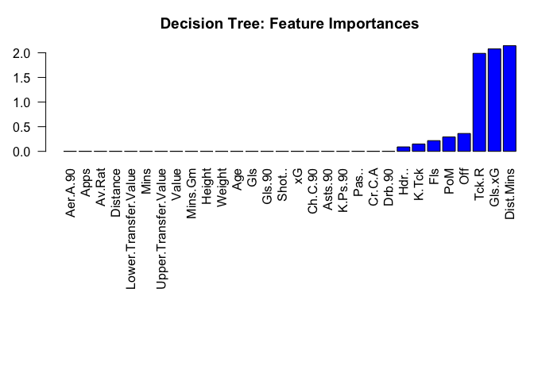

Decision Tree
Contents
Decision Tree#
Since the data has been cleaned, it can now be used to create the models.
# Load libraries
library(caret)
## Loading required package: ggplot2
## Loading required package: lattice
library(rpart)
library(MASS)
# Load helpers
source("./../helpers/helper.R")
Import data#
To evaluate the model, there should be a set of which the model has not seen and for which the labels are known. Hence, it is necessary to split the data into training and testing set.
# Read training and testing data
train <- read.csv("./../data/regression_data/intermediates/train.csv")
test <- read.csv("./../data/regression_data/intermediates/test.csv")
Model Training#
The model is first trained on the training data and then evaluated on testing data.
# Model training
dtree.model <- rpart(CA~., data=train)
summary(dtree.model)
## Call:
## rpart(formula = CA ~ ., data = train)
## n= 898
##
## CP nsplit rel error xerror xstd
## 1 0.55145604 0 1.0000000 1.0019434 0.04521323
## 2 0.13043591 1 0.4485440 0.4664212 0.02320373
## 3 0.09055841 2 0.3181080 0.3346267 0.01820894
## 4 0.02027054 3 0.2275496 0.2469729 0.01718494
## 5 0.01588124 4 0.2072791 0.2305449 0.01704413
## 6 0.01000000 5 0.1913979 0.2161809 0.01672047
##
## Variable importance
## Value Upper.Transfer.Value Lower.Transfer.Value
## 31 30 28
## Av.Rat Pas.. Distance
## 3 3 3
## Mins
## 1
##
## Node number 1: 898 observations, complexity param=0.551456
## mean=118.3073, MSE=416.3064
## left son=2 (508 obs) right son=3 (390 obs)
## Primary splits:
## Value < 2006250 to the left, improve=0.55145600, (0 missing)
## Upper.Transfer.Value < 3250000 to the left, improve=0.54103040, (0 missing)
## Lower.Transfer.Value < 362500 to the left, improve=0.52493620, (0 missing)
## Distance < 147.75 to the left, improve=0.07753114, (0 missing)
## Apps < 16.5 to the left, improve=0.07698713, (0 missing)
## Surrogate splits:
## Upper.Transfer.Value < 3650000 to the left, agree=0.988, adj=0.972, (0 split)
## Lower.Transfer.Value < 362500 to the left, agree=0.965, adj=0.921, (0 split)
## Distance < 147.75 to the left, agree=0.618, adj=0.121, (0 split)
## Pas.. < 0.935 to the left, agree=0.615, adj=0.113, (0 split)
## Av.Rat < 6.995 to the left, agree=0.608, adj=0.097, (0 split)
##
## Node number 2: 508 observations, complexity param=0.09055841
## mean=105.0315, MSE=158.499
## left son=4 (292 obs) right son=5 (216 obs)
## Primary splits:
## Value < 316250 to the left, improve=0.4204632, (0 missing)
## Upper.Transfer.Value < 487500 to the left, improve=0.3829259, (0 missing)
## Lower.Transfer.Value < 105000 to the left, improve=0.3611831, (0 missing)
## Apps < 18.5 to the left, improve=0.1251184, (0 missing)
## Mins < 1511.5 to the left, improve=0.1112471, (0 missing)
## Surrogate splits:
## Upper.Transfer.Value < 575000 to the left, agree=0.980, adj=0.954, (0 split)
## Lower.Transfer.Value < 57500 to the left, agree=0.945, adj=0.870, (0 split)
## Apps < 18.5 to the left, agree=0.630, adj=0.130, (0 split)
## Mins < 1529.5 to the left, agree=0.630, adj=0.130, (0 split)
## Fls < 24.5 to the left, agree=0.600, adj=0.060, (0 split)
##
## Node number 3: 390 observations, complexity param=0.1304359
## mean=135.6, MSE=223.5067
## left son=6 (251 obs) right son=7 (139 obs)
## Primary splits:
## Value < 1.7e+07 to the left, improve=0.5594117, (0 missing)
## Lower.Transfer.Value < 15250000 to the left, improve=0.5578796, (0 missing)
## Upper.Transfer.Value < 18750000 to the left, improve=0.5565984, (0 missing)
## Av.Rat < 7.115 to the left, improve=0.1714549, (0 missing)
## Mins < 1150.5 to the left, improve=0.1061355, (0 missing)
## Surrogate splits:
## Upper.Transfer.Value < 19750000 to the left, agree=0.995, adj=0.986, (0 split)
## Lower.Transfer.Value < 13250000 to the left, agree=0.987, adj=0.964, (0 split)
## Av.Rat < 7.235 to the left, agree=0.715, adj=0.201, (0 split)
## Pas.. < 0.945 to the left, agree=0.685, adj=0.115, (0 split)
## Ch.C.90 < 0.805 to the left, agree=0.669, adj=0.072, (0 split)
##
## Node number 4: 292 observations, complexity param=0.01588124
## mean=98.01027, MSE=105.5718
## left son=8 (111 obs) right son=9 (181 obs)
## Primary splits:
## Value < 37501.75 to the left, improve=0.19259410, (0 missing)
## Upper.Transfer.Value < 87500 to the left, improve=0.18532660, (0 missing)
## Lower.Transfer.Value < 15000 to the left, improve=0.13988960, (0 missing)
## Apps < 17.5 to the left, improve=0.09091305, (0 missing)
## Distance < 63.4 to the left, improve=0.07225105, (0 missing)
## Surrogate splits:
## Upper.Transfer.Value < 77500 to the left, agree=0.976, adj=0.937, (0 split)
## Lower.Transfer.Value < 6500 to the left, agree=0.911, adj=0.766, (0 split)
## Distance < 46.3 to the left, agree=0.664, adj=0.117, (0 split)
## Dist.Mins < 0.03083345 to the left, agree=0.664, adj=0.117, (0 split)
## Hdr.. < 0.855 to the right, agree=0.654, adj=0.090, (0 split)
##
## Node number 5: 216 observations
## mean=114.5231, MSE=73.31428
##
## Node number 6: 251 observations
## mean=127.2789, MSE=81.06167
##
## Node number 7: 139 observations, complexity param=0.02027054
## mean=150.6259, MSE=129.9176
## left son=14 (90 obs) right son=15 (49 obs)
## Primary splits:
## Value < 68250000 to the left, improve=0.41963530, (0 missing)
## Upper.Transfer.Value < 8.4e+07 to the left, improve=0.41272680, (0 missing)
## Lower.Transfer.Value < 5.7e+07 to the left, improve=0.40460400, (0 missing)
## Av.Rat < 7.17 to the left, improve=0.19091520, (0 missing)
## Aer.A.90 < 12.94 to the left, improve=0.09036118, (0 missing)
## Surrogate splits:
## Upper.Transfer.Value < 8.4e+07 to the left, agree=0.993, adj=0.980, (0 split)
## Lower.Transfer.Value < 52500000 to the left, agree=0.986, adj=0.959, (0 split)
## Av.Rat < 7.325 to the left, agree=0.741, adj=0.265, (0 split)
## Weight < 88.5 to the left, agree=0.698, adj=0.143, (0 split)
## Mins < 1552.5 to the left, agree=0.691, adj=0.122, (0 split)
##
## Node number 8: 111 observations
## mean=92.25225, MSE=67.30574
##
## Node number 9: 181 observations
## mean=101.5414, MSE=96.23723
##
## Node number 14: 90 observations
## mean=145.1778, MSE=50.52395
##
## Node number 15: 49 observations
## mean=160.6327, MSE=121.0895
Model Validation#
# Predict the samples from test data using the model
result <- predict(dtree.model, test)
# Print the RMSE and MAE
cat(paste("RMSE: ", RMSE(result, test$CA), "\n", "MSE: ", RMSE(result, test$CA)^2, "\n", "MAE: ", MAE(result, test$CA)))
## RMSE: 10.0944462277776
## MSE: 101.897844645493
## MAE: 7.98545835211613
# Plot feature importance
varImp.df <- data.frame(varImp(dtree.model))
varImp.df$Overall <- varImp.df[order(varImp.df$Overall, decreasing = FALSE),]
par(mar=c(15,3,3,0))
barplot(varImp.df$Overall, names.arg=rownames(varImp.df), las=2, col="blue", main="Decision Tree: Feature Importances")

# Save the results
save.reg.result(RMSE(result, test$CA), MAE(result, test$CA), "Decision Tree Regression")
Prediction with Unknown Data#
# Load the data
unk <- read.csv("./../data/regression_data/intermediates/unknown_data.csv")
## Warning in read.table(file = file, header = header, sep = sep, quote = quote, :
## incomplete final line found by readTableHeader on './../data/regression_data/
## intermediates/unknown_data.csv'
dim(unk)
## [1] 1 30
# Predict using the built model
prediction <- predict(dtree.model, unk)
prediction
## 1
## 101.5414